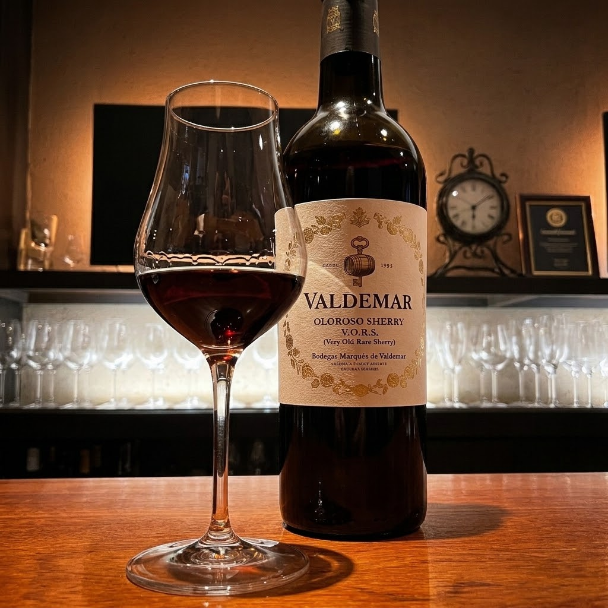
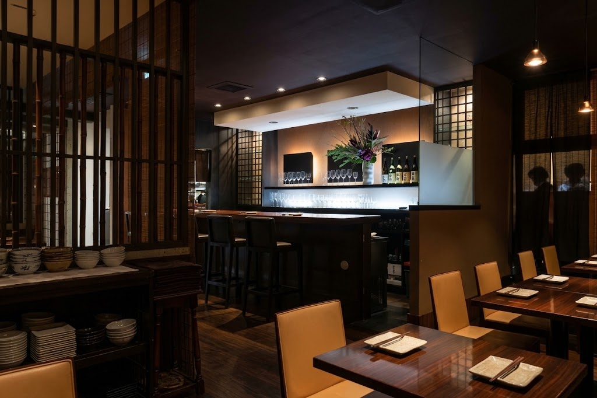

glasstoが大切にしていること
旬の地元食材 × 独創的フレンチ
岩手の生産者から直接仕入れる四季折々の食材を、その日の持ち味を活かした一皿に。
ソムリエ厳選ワインと希少日本酒
ソムリエ資格を持つ店主とスタッフが選んだワインと、岩手の地酒を中心とした日本酒をご用意しています。
特別な時間を過ごせる空間
個室、カウンター、ソファ席、テーブル席。落ち着いた隠れ家のような雰囲気です。
気軽に楽しめるおまかせ
その日の仕入れで決まるおまかせ料理やセットで、初めての方も旬の味とお酒のペアリングを。
ソムリエが選ぶ、
ワインと日本酒。
ワインは旬に合わせてセレクトし、ワインセラーで丁寧に管理しています。日本酒は岩手の地酒を中心に、希少なものまで取り揃えました。
料理とのペアリング（アペリアージュ）は、スタッフが丁寧にご提案します。ワインの知識がなくても、食べたい料理を選んで「これに合うワインを」とお伝えいただくだけで大丈夫です。ワインバーとして、2軒目のご利用も歓迎しています。

ペアリングセット
その日のおすすめ料理に、ソムリエが選ぶワインや日本酒を合わせる「ペアリングセット」を準備中です。料理ごとに合うお酒を一度にお楽しみいただけます。内容と提供開始時期は、決まり次第お知らせします。

仕事帰りから、記念日まで。
個室、カウンター席、ソファ席、テーブル席をご用意しています。仕事帰りの一杯、デート、女子会、記念日、接待まで、さまざまなシーンにご利用いただけます。
お誕生日などのお祝いには、バースデープレートのご相談も承ります。ご予約時にお知らせください。
お客様の声
ワインの知識が無くても、お料理とワインのペアリングが気軽に楽しめるお店です。食べたいお料理を選んだら、これに合うワインを！！とオーダーするだけで素晴らしいマリアージュを楽しむことができます🍷
口コミより友人の誕生日会をしたくて予約しました。予約の時点でバースデープレートのことについて友人の好みや予算など細かく聞いてくださって、とてもありがたかったです。初めて訪れましたが、落ち着いた雰囲気で大切な日に使いたいなあという感じです。値段もまあまあお高めですが、料理もワインも美味しくてまた行きたいと思えるお店でした。
口コミより盛岡バスセンターから徒歩1分。
盛岡駅から車・タクシーで約5分。バスセンターのすぐそばです。
- 店名
- glassto（グラスト）
- 住所
- 〒020-0884 岩手県盛岡市神明町5-21 Fフラット 1F
- 電話番号
- 019-601-5966
- 定休日
- 日曜・月曜
- お支払い
- クレジットカード、各種電子決済に対応
- 運営会社
- 株式会社divan
- 代表者
- 菊池 拓
- 採用情報
- 求人情報（Instagram）